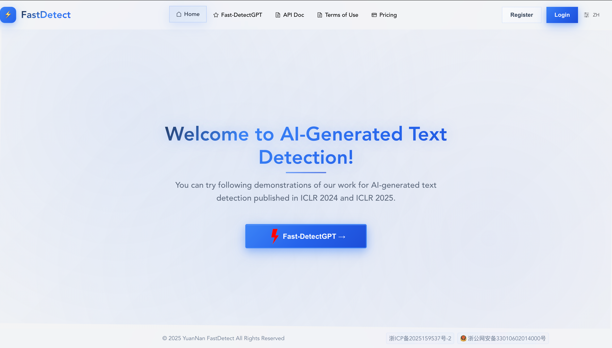

Fast-DetectGPT
A cutting-edge tool for identifying AI-generated text. Leveraging open-source small language models without requiring training, Fast-DetectGPT detects content from large models such as ChatGPT and GPT-4 with 340× faster speed and 75% higher accuracy than the original DetectGPT.
Designed for efficiency and precision, ideal for applications requiring rapid and reliable text analysis. Free API access is available — submit your email to receive a unique API key.
Visit the platform